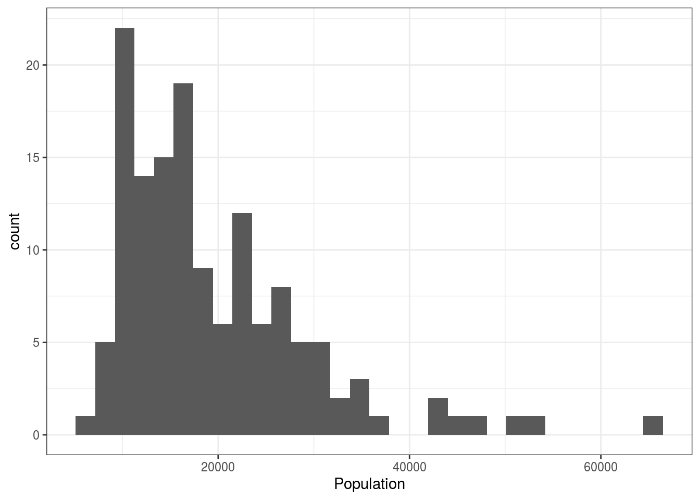
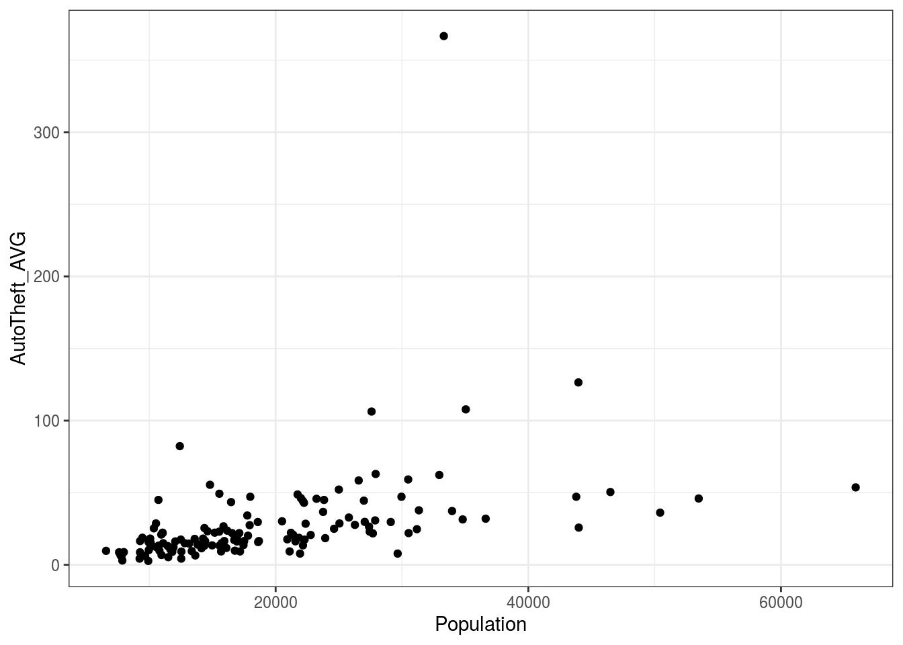
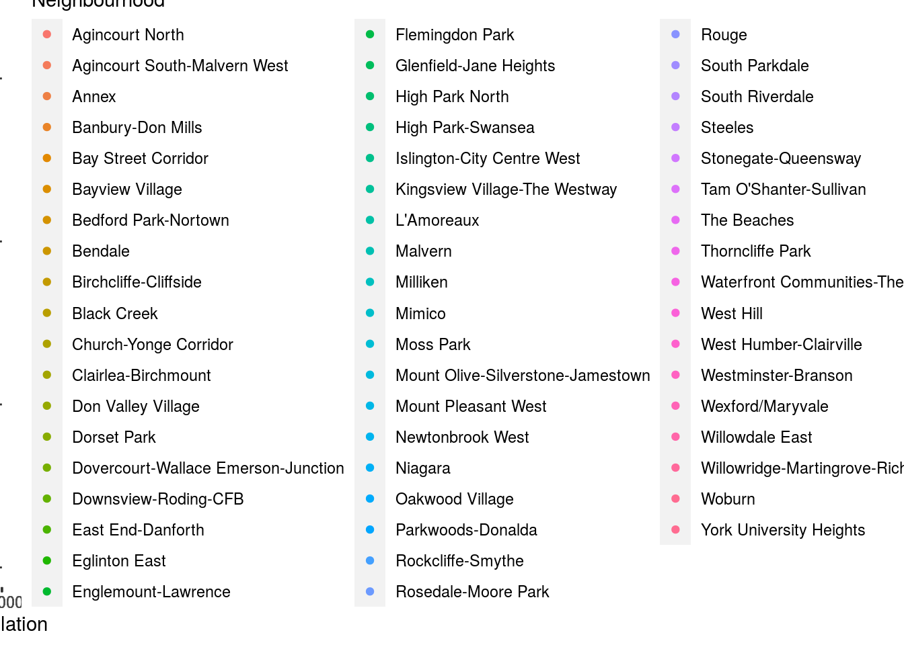
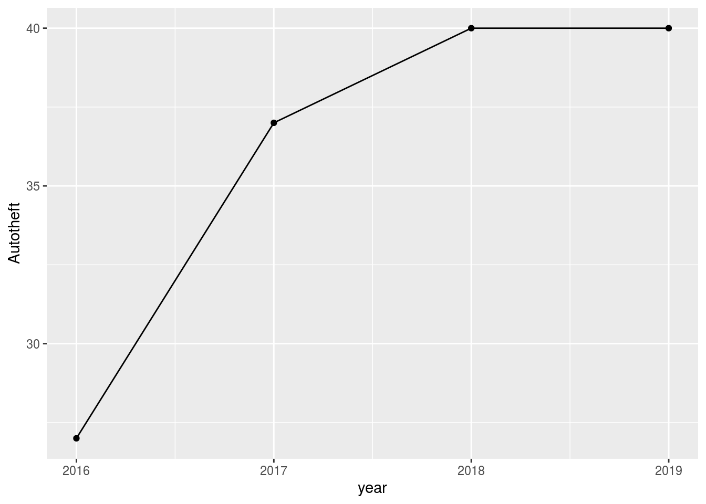
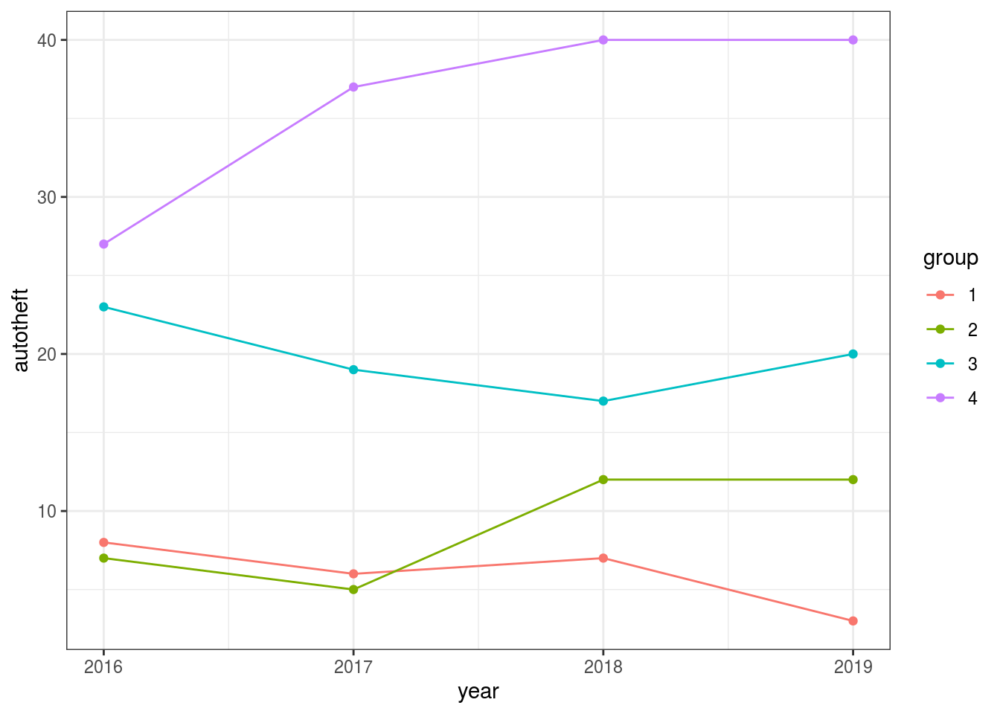
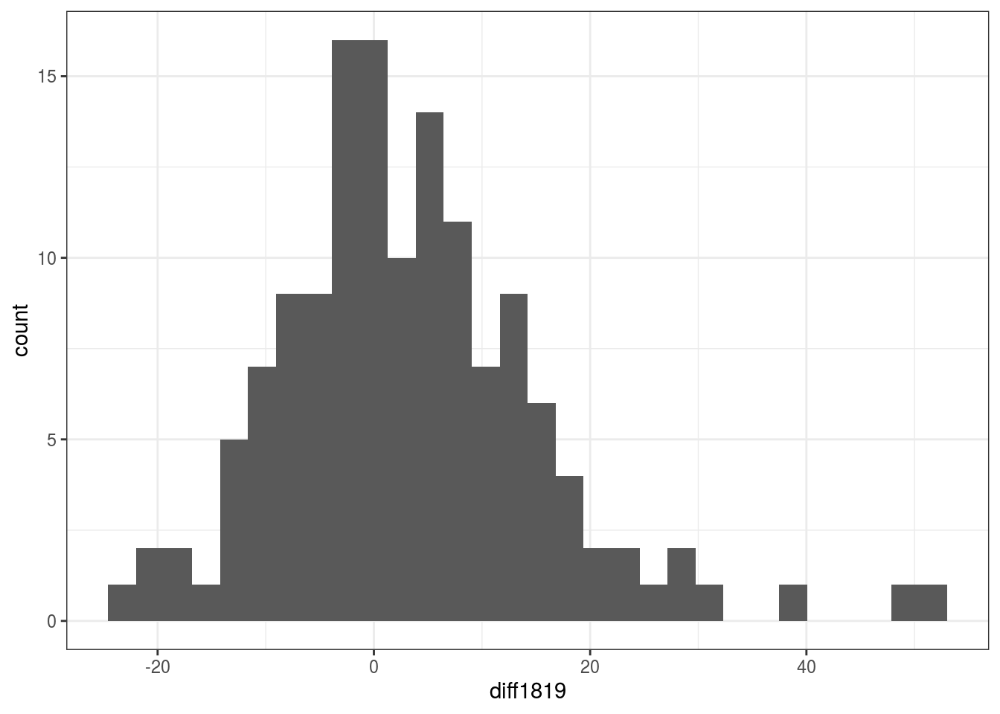
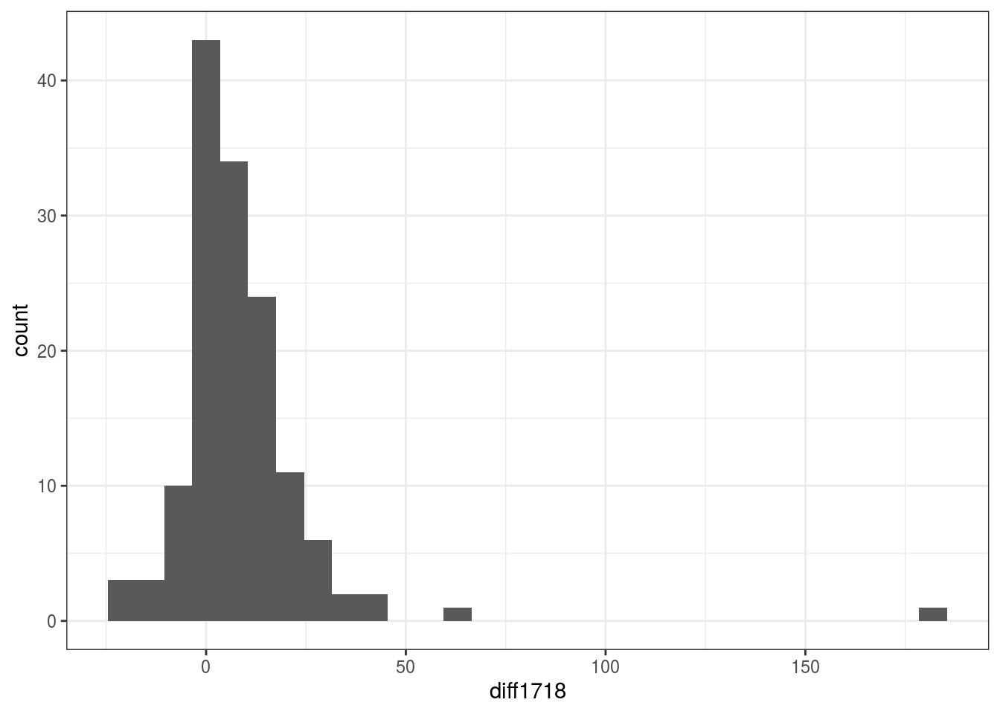
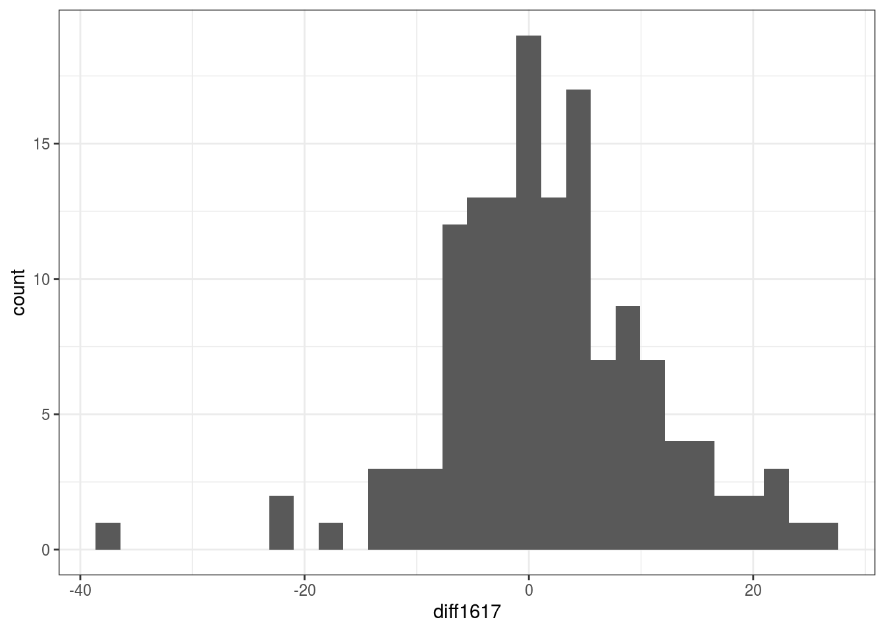

Introduction about dataset called “Neighbourhood Crime Rates”: This is a dataset published by Toronto Police Services, and it is basically gathering the frequencies about assault, auto theft, break and enter, bobbery, theft over and Homicide in specific locations and the relationship between other obervations, which I assumed it exists positive correlation. first of all, I need to know how many observations totally in the dataset, and set “Neighbourhood” as my catogorical data. Then I chose AutoTheft occurrences from 2017 to 2019 also the Averate auto thefts from 2014-2019 and percentage Change in auto thefts from 2018-2019. I am going to pull out only AutoTheft observations from 2016-2019, and plot the population and AutoTheft average in the diagram, where we could found out these two variables have positive linear relation. Then I computed the mean values of autotheft from 2016 to 2019 and analysis the trend of autotheft.
The City of Toronto Open Dataset started in 2009 to satisfied the demand of increasing opened data. Since then,it has apprently increasing momentum in civic spaces.
summary(data1$Neighbourhood)## Length Class Mode
## 140 character characterdata1$Neighbourhood=factor(data1$Neighbourhood)
data=data1
summary(data1)## _id OBJECTID Neighbourhood
## Min. : 1.00 Min. : 1.00 Agincourt North : 1
## 1st Qu.: 35.75 1st Qu.: 35.75 Agincourt South-Malvern West: 1
## Median : 70.50 Median : 70.50 Alderwood : 1
## Mean : 70.50 Mean : 70.50 Annex : 1
## 3rd Qu.:105.25 3rd Qu.:105.25 Banbury-Don Mills : 1
## Max. :140.00 Max. :140.00 Bathurst Manor : 1
## (Other) :134
## Hood_ID Population Assault_2014 Assault_2015
## Length:140 Min. : 6577 Min. : 16.00 Min. : 12.00
## Class :character 1st Qu.:12020 1st Qu.: 53.75 1st Qu.: 57.25
## Mode :character Median :16750 Median : 85.00 Median : 92.00
## Mean :19511 Mean :117.35 Mean :126.89
## 3rd Qu.:23854 3rd Qu.:141.25 3rd Qu.:152.25
## Max. :65913 Max. :738.00 Max. :826.00
##
## Assault_2016 Assault_2017 Assault_2018 Assault_2019
## Min. : 10.0 Min. : 20.00 Min. : 15.00 Min. : 17.0
## 1st Qu.: 57.5 1st Qu.: 58.75 1st Qu.: 58.75 1st Qu.: 62.0
## Median : 97.0 Median : 94.00 Median : 93.50 Median : 99.5
## Mean :132.2 Mean :134.61 Mean :138.94 Mean :145.9
## 3rd Qu.:166.2 3rd Qu.:159.50 3rd Qu.:167.50 3rd Qu.:172.0
## Max. :888.0 Max. :905.00 Max. :910.00 Max. :916.0
##
## Assault_AVG Assault_CHG Assault_Rate_2019 AutoTheft_2014
## Min. : 18.50 Min. :-0.40000 Min. : 161.1 Min. : 1.00
## 1st Qu.: 59.42 1st Qu.:-0.04000 1st Qu.: 392.3 1st Qu.: 10.00
## Median : 96.50 Median : 0.05000 Median : 592.6 Median : 17.50
## Mean :132.65 Mean : 0.08707 Mean : 714.3 Mean : 24.84
## 3rd Qu.:160.20 3rd Qu.: 0.19250 3rd Qu.: 875.7 3rd Qu.: 29.25
## Max. :851.80 Max. : 1.00000 Max. :3550.8 Max. :305.00
##
## AutoTheft_2015 AutoTheft_2016 AutoTheft_2017 AutoTheft_2018
## Min. : 0.00 Min. : 1.00 Min. : 0.00 Min. : 2.00
## 1st Qu.: 11.00 1st Qu.: 9.00 1st Qu.: 10.00 1st Qu.: 13.00
## Median : 17.00 Median : 16.00 Median : 18.50 Median : 22.50
## Mean : 22.91 Mean : 23.32 Mean : 25.16 Mean : 33.72
## 3rd Qu.: 26.25 3rd Qu.: 27.00 3rd Qu.: 29.50 3rd Qu.: 41.25
## Max. :261.00 Max. :321.00 Max. :326.00 Max. :505.00
##
## AutoTheft_2019 AutoTheft_AVG AutoTheft_CHG AutoTheft_Rate_2019
## Min. : 3.00 Min. : 2.70 Min. :-0.6800 Min. : 26.1
## 1st Qu.: 15.75 1st Qu.: 13.28 1st Qu.:-0.1725 1st Qu.: 102.8
## Median : 27.00 Median : 18.80 Median : 0.0850 Median : 147.2
## Mean : 37.04 Mean : 27.84 Mean : 0.2241 Mean : 185.6
## 3rd Qu.: 42.00 3rd Qu.: 30.98 3rd Qu.: 0.4300 3rd Qu.: 199.2
## Max. :482.00 Max. :366.70 Max. : 3.1100 Max. :1446.9
##
## BreakandEnter_2014 BreakandEnter_2015 BreakandEnter_2016 BreakandEnter_2017
## Min. : 7.00 Min. : 11.00 Min. : 9.00 Min. : 8.00
## 1st Qu.: 30.00 1st Qu.: 27.00 1st Qu.: 24.75 1st Qu.: 25.75
## Median : 40.50 Median : 39.50 Median : 38.00 Median : 39.00
## Mean : 51.28 Mean : 49.29 Mean : 45.70 Mean : 49.16
## 3rd Qu.: 68.00 3rd Qu.: 66.00 3rd Qu.: 57.25 3rd Qu.: 62.25
## Max. :156.00 Max. :185.00 Max. :212.00 Max. :261.00
##
## BreakandEnter_2018 BreakandEnter_2019 BreakandEnter_AVG BreakandEnter_CHG
## Min. : 7.00 Min. : 8.00 Min. : 10.50 Min. :-0.6000
## 1st Qu.: 25.00 1st Qu.: 26.00 1st Qu.: 28.00 1st Qu.:-0.1550
## Median : 40.50 Median : 45.00 Median : 40.75 Median : 0.0850
## Mean : 53.98 Mean : 59.90 Mean : 51.55 Mean : 0.1501
## 3rd Qu.: 66.00 3rd Qu.: 67.25 3rd Qu.: 64.45 3rd Qu.: 0.3825
## Max. :334.00 Max. :336.00 Max. :247.30 Max. : 2.1300
##
## BreakandEnter_Rate_2019 Homicide_2014 Homicide_2015 Homicide_2016
## Min. : 67.5 Min. :0.0000 Min. :0.0000 Min. :0.0000
## 1st Qu.: 173.6 1st Qu.:0.0000 1st Qu.:0.0000 1st Qu.:0.0000
## Median : 258.6 Median :0.0000 Median :0.0000 Median :0.0000
## Mean : 305.6 Mean :0.4143 Mean :0.4214 Mean :0.5357
## 3rd Qu.: 361.2 3rd Qu.:1.0000 3rd Qu.:1.0000 3rd Qu.:1.0000
## Max. :1549.2 Max. :3.0000 Max. :4.0000 Max. :6.0000
##
## Homicide_2017 Homicide_2018 Homicide_2019 Homicide_AVG
## Min. :0.0000 Min. : 0.0000 Min. :0.0000 Min. :0.0000
## 1st Qu.:0.0000 1st Qu.: 0.0000 1st Qu.:0.0000 1st Qu.:0.2000
## Median :0.0000 Median : 0.0000 Median :0.0000 Median :0.3000
## Mean :0.4643 Mean : 0.6857 Mean :0.5571 Mean :0.5136
## 3rd Qu.:1.0000 3rd Qu.: 1.0000 3rd Qu.:1.0000 3rd Qu.:0.7250
## Max. :5.0000 Max. :10.0000 Max. :3.0000 Max. :2.5000
##
## Homicide_CHG Homicide_Rate_2019 Robbery_2014 Robbery_2015
## Min. :-1.00000 Min. : 0.000 Min. : 0.00 Min. : 1.00
## 1st Qu.:-0.50000 1st Qu.: 0.000 1st Qu.: 10.75 1st Qu.: 9.00
## Median : 0.00000 Median : 0.000 Median : 18.00 Median : 17.50
## Mean : 0.07971 Mean : 2.987 Mean : 25.83 Mean : 24.75
## 3rd Qu.: 0.00000 3rd Qu.: 5.725 3rd Qu.: 33.25 3rd Qu.: 35.00
## Max. : 3.00000 Max. :24.200 Max. :122.00 Max. :128.00
##
## Robbery_2016 Robbery_2017 Robbery_2018 Robbery_2019
## Min. : 0.00 Min. : 0.00 Min. : 1.00 Min. : 1.00
## 1st Qu.: 10.00 1st Qu.: 10.00 1st Qu.: 9.00 1st Qu.: 11.00
## Median : 18.50 Median : 20.00 Median : 18.00 Median : 16.00
## Mean : 25.81 Mean : 27.89 Mean : 25.19 Mean : 24.41
## 3rd Qu.: 32.00 3rd Qu.: 34.25 3rd Qu.: 31.00 3rd Qu.: 30.25
## Max. :129.00 Max. :138.00 Max. :169.00 Max. :143.00
##
## Robbery_AVG Robbery_CHG Robbery_Rate_2019 TheftOver_2014
## Min. : 3.30 Min. :-0.8300 Min. : 7.50 Min. : 0.000
## 1st Qu.: 11.68 1st Qu.:-0.2225 1st Qu.: 70.35 1st Qu.: 2.000
## Median : 20.10 Median :-0.0500 Median :104.20 Median : 5.000
## Mean : 25.65 Mean : 0.2852 Mean :122.81 Mean : 7.071
## 3rd Qu.: 30.40 3rd Qu.: 0.4625 3rd Qu.:148.57 3rd Qu.: 8.000
## Max. :135.70 Max. :12.0000 Max. :668.10 Max. :54.000
##
## TheftOver_2015 TheftOver_2016 TheftOver_2017 TheftOver_2018
## Min. : 1.000 Min. : 0.000 Min. : 0.000 Min. : 0.000
## 1st Qu.: 3.000 1st Qu.: 2.000 1st Qu.: 3.000 1st Qu.: 3.000
## Median : 5.000 Median : 4.500 Median : 5.000 Median : 5.000
## Mean : 7.329 Mean : 7.321 Mean : 8.314 Mean : 8.764
## 3rd Qu.: 8.000 3rd Qu.: 8.000 3rd Qu.:10.000 3rd Qu.:10.000
## Max. :58.000 Max. :59.000 Max. :58.000 Max. :59.000
##
## TheftOver_2019 TheftOver_AVG TheftOver_CHG TheftOver_Rate_2019
## Min. : 0.000 Min. : 1.200 Min. :-1.0000 Min. : 0.00
## 1st Qu.: 3.000 1st Qu.: 3.500 1st Qu.:-0.2000 1st Qu.: 22.75
## Median : 6.000 Median : 5.200 Median : 0.1100 Median : 37.40
## Mean : 9.679 Mean : 8.083 Mean : 0.3776 Mean : 47.13
## 3rd Qu.:10.250 3rd Qu.: 8.350 3rd Qu.: 0.6700 3rd Qu.: 54.65
## Max. :73.000 Max. :56.200 Max. : 4.0000 Max. :283.00
##
## Shape__Area Shape__Length geometry
## Min. : 424197 Min. : 2574 POLYGON :140
## 1st Qu.: 1861853 1st Qu.: 6372 epsg:4326 : 0
## Median : 3290879 Median : 8962 +proj=long...: 0
## Mean : 4589400 Mean :10138
## 3rd Qu.: 5402335 3rd Qu.:11900
## Max. :37534495 Max. :43081
## #_id,OBJECTID,Neighbourhood and Hood_ID summary are meaningless.
head(data1)## Simple feature collection with 6 features and 61 fields
## geometry type: POLYGON
## dimension: XY
## bbox: xmin: -79.58517 ymin: 43.61273 xmax: -79.28772 ymax: 43.77269
## CRS: EPSG:4326
## # A tibble: 6 x 62
## `_id` OBJECTID Neighbourhood Hood_ID Population Assault_2014 Assault_2015
## <int> <int> <fct> <chr> <int> <int> <int>
## 1 1 16 South Parkda… 085 21849 202 226
## 2 2 17 South Riverd… 070 27876 215 207
## 3 3 18 St.Andrew-Wi… 040 17812 53 41
## 4 4 19 Taylor-Massey 061 15683 127 92
## 5 5 20 Humber Summit 021 12416 76 89
## 6 6 21 Humbermede 022 15545 117 132
## # … with 55 more variables: Assault_2016 <int>, Assault_2017 <int>,
## # Assault_2018 <int>, Assault_2019 <int>, Assault_AVG <dbl>,
## # Assault_CHG <dbl>, Assault_Rate_2019 <dbl>, AutoTheft_2014 <int>,
## # AutoTheft_2015 <int>, AutoTheft_2016 <int>, AutoTheft_2017 <int>,
## # AutoTheft_2018 <int>, AutoTheft_2019 <int>, AutoTheft_AVG <dbl>,
## # AutoTheft_CHG <dbl>, AutoTheft_Rate_2019 <dbl>, BreakandEnter_2014 <int>,
## # BreakandEnter_2015 <int>, BreakandEnter_2016 <int>,
## # BreakandEnter_2017 <int>, BreakandEnter_2018 <int>,
## # BreakandEnter_2019 <int>, BreakandEnter_AVG <dbl>, BreakandEnter_CHG <dbl>,
## # BreakandEnter_Rate_2019 <dbl>, Homicide_2014 <int>, Homicide_2015 <int>,
## # Homicide_2016 <int>, Homicide_2017 <int>, Homicide_2018 <int>,
## # Homicide_2019 <int>, Homicide_AVG <dbl>, Homicide_CHG <dbl>,
## # Homicide_Rate_2019 <dbl>, Robbery_2014 <int>, Robbery_2015 <int>,
## # Robbery_2016 <int>, Robbery_2017 <int>, Robbery_2018 <int>,
## # Robbery_2019 <int>, Robbery_AVG <dbl>, Robbery_CHG <dbl>,
## # Robbery_Rate_2019 <dbl>, TheftOver_2014 <int>, TheftOver_2015 <int>,
## # TheftOver_2016 <int>, TheftOver_2017 <int>, TheftOver_2018 <int>,
## # TheftOver_2019 <int>, TheftOver_AVG <dbl>, TheftOver_CHG <dbl>,
## # TheftOver_Rate_2019 <dbl>, Shape__Area <dbl>, Shape__Length <dbl>,
## # geometry <POLYGON [°]>str(data1)## tibble [140 × 62] (S3: sf/tbl_df/tbl/data.frame)
## $ _id : int [1:140] 1 2 3 4 5 6 7 8 9 10 ...
## $ OBJECTID : int [1:140] 16 17 18 19 20 21 22 23 24 25 ...
## $ Neighbourhood : Factor w/ 140 levels "Agincourt North",..: 110 111 112 116 55 56 23 24 25 27 ...
## $ Hood_ID : chr [1:140] "085" "070" "040" "061" ...
## $ Population : int [1:140] 21849 27876 17812 15683 12416 15545 13362 31340 26984 15935 ...
## $ Assault_2014 : int [1:140] 202 215 53 127 76 117 50 480 247 79 ...
## $ Assault_2015 : int [1:140] 226 207 41 92 89 132 39 495 259 97 ...
## $ Assault_2016 : int [1:140] 231 236 48 97 118 114 48 543 244 106 ...
## $ Assault_2017 : int [1:140] 229 243 45 107 116 157 48 694 243 114 ...
## $ Assault_2018 : int [1:140] 220 304 55 123 109 119 46 766 288 132 ...
## $ Assault_2019 : int [1:140] 251 261 58 122 118 161 48 879 282 133 ...
## $ Assault_AVG : num [1:140] 226 244 50 111 104 ...
## $ Assault_CHG : num [1:140] 0.14 -0.14 0.05 -0.01 0.08 0.35 0.04 0.15 -0.02 0.01 ...
## $ Assault_Rate_2019 : num [1:140] 1149 936 326 778 950 ...
## $ AutoTheft_2014 : int [1:140] 13 18 15 11 66 36 8 31 42 17 ...
## $ AutoTheft_2015 : int [1:140] 20 23 25 9 42 33 7 24 29 12 ...
## $ AutoTheft_2016 : int [1:140] 23 27 10 7 62 45 5 23 44 10 ...
## $ AutoTheft_2017 : int [1:140] 19 37 15 5 83 58 8 27 40 18 ...
## $ AutoTheft_2018 : int [1:140] 17 40 21 12 106 56 10 68 46 23 ...
## $ AutoTheft_2019 : int [1:140] 20 40 35 12 135 68 19 54 66 19 ...
## $ AutoTheft_AVG : num [1:140] 18.7 30.8 20.2 9.3 82.3 49.3 9.5 37.8 44.5 16.5 ...
## $ AutoTheft_CHG : num [1:140] 0.18 0 0.67 0 0.27 0.21 0.9 -0.21 0.43 -0.17 ...
## $ AutoTheft_Rate_2019 : num [1:140] 91.5 143.5 196.5 76.5 1087.3 ...
## $ BreakandEnter_2014 : int [1:140] 45 89 81 31 54 35 13 141 130 41 ...
## $ BreakandEnter_2015 : int [1:140] 51 98 79 71 44 35 15 152 116 58 ...
## $ BreakandEnter_2016 : int [1:140] 71 148 57 43 41 24 19 145 86 57 ...
## $ BreakandEnter_2017 : int [1:140] 58 94 91 27 40 21 23 199 103 36 ...
## $ BreakandEnter_2018 : int [1:140] 78 91 81 41 56 44 16 191 65 51 ...
## $ BreakandEnter_2019 : int [1:140] 89 133 83 63 57 61 29 303 65 46 ...
## $ BreakandEnter_AVG : num [1:140] 65.3 108.8 78.7 46 48.7 ...
## $ BreakandEnter_CHG : num [1:140] 0.14 0.46 0.02 0.54 0.02 0.39 0.81 0.59 0 -0.1 ...
## $ BreakandEnter_Rate_2019: num [1:140] 407 477 466 402 459 ...
## $ Homicide_2014 : int [1:140] 0 1 1 0 0 0 0 1 0 0 ...
## $ Homicide_2015 : int [1:140] 0 0 0 1 1 0 0 4 2 1 ...
## $ Homicide_2016 : int [1:140] 1 3 0 1 0 1 0 3 1 0 ...
## $ Homicide_2017 : int [1:140] 0 5 2 1 2 1 1 1 0 0 ...
## $ Homicide_2018 : int [1:140] 0 2 0 0 1 0 1 2 3 1 ...
## $ Homicide_2019 : int [1:140] 1 0 0 1 3 0 0 1 1 0 ...
## $ Homicide_AVG : num [1:140] 0.3 1.8 0.5 0.7 1.2 0.3 0.3 2 1.2 0.3 ...
## $ Homicide_CHG : num [1:140] 1 -1 0 1 2 0 -1 -0.5 -0.67 -1 ...
## $ Homicide_Rate_2019 : num [1:140] 4.6 0 0 6.4 24.2 0 0 3.2 3.7 0 ...
## $ Robbery_2014 : int [1:140] 24 64 8 24 22 28 10 122 40 28 ...
## $ Robbery_2015 : int [1:140] 35 42 5 37 23 27 4 128 44 22 ...
## $ Robbery_2016 : int [1:140] 41 49 14 16 23 24 13 114 46 24 ...
## $ Robbery_2017 : int [1:140] 30 64 0 20 27 34 11 138 51 30 ...
## $ Robbery_2018 : int [1:140] 35 40 4 16 31 29 6 169 28 14 ...
## $ Robbery_2019 : int [1:140] 33 35 12 13 28 27 1 143 37 25 ...
## $ Robbery_AVG : num [1:140] 33 49 7.2 21 25.7 ...
## $ Robbery_CHG : num [1:140] -0.06 -0.13 2 -0.19 -0.1 -0.07 -0.83 -0.15 0.32 0.79 ...
## $ Robbery_Rate_2019 : num [1:140] 151 125.6 67.4 82.9 225.5 ...
## $ TheftOver_2014 : int [1:140] 6 18 10 4 15 1 1 32 4 4 ...
## $ TheftOver_2015 : int [1:140] 4 16 14 3 16 9 1 16 15 5 ...
## $ TheftOver_2016 : int [1:140] 9 22 8 5 18 1 1 40 18 3 ...
## $ TheftOver_2017 : int [1:140] 10 27 7 2 18 7 4 30 7 7 ...
## $ TheftOver_2018 : int [1:140] 9 24 6 4 15 10 2 43 12 3 ...
## $ TheftOver_2019 : int [1:140] 22 21 6 3 22 8 3 42 14 3 ...
## $ TheftOver_AVG : num [1:140] 10 21.3 8.5 3.5 17.3 6 2 33.8 11.7 4.2 ...
## $ TheftOver_CHG : num [1:140] 1.44 -0.13 0 -0.25 0.47 -0.2 0.5 -0.02 0.17 0 ...
## $ TheftOver_Rate_2019 : num [1:140] 100.7 75.3 33.7 19.1 177.2 ...
## $ Shape__Area : num [1:140] 2286974 10964574 7299580 1062970 7966905 ...
## $ Shape__Length : num [1:140] 10803 43081 13026 5941 12609 ...
## $ geometry :sfc_POLYGON of length 140; first list element: List of 1
## ..$ : num [1:814, 1:2] -79.4 -79.4 -79.4 -79.4 -79.4 ...
## ..- attr(*, "class")= chr [1:3] "XY" "POLYGON" "sfg"
## - attr(*, "sf_column")= chr "geometry"
## - attr(*, "agr")= Factor w/ 3 levels "constant","aggregate",..: NA NA NA NA NA NA NA NA NA NA ...
## ..- attr(*, "names")= chr [1:61] "_id" "OBJECTID" "Neighbourhood" "Hood_ID" ...data=
data %>%
select(Hood_ID,Neighbourhood, Population, AutoTheft_2017, AutoTheft_2018, AutoTheft_2019,AutoTheft_AVG, AutoTheft_CHG, AutoTheft_Rate_2019)
summary(data)## Hood_ID Neighbourhood Population
## Length:140 Agincourt North : 1 Min. : 6577
## Class :character Agincourt South-Malvern West: 1 1st Qu.:12020
## Mode :character Alderwood : 1 Median :16750
## Annex : 1 Mean :19511
## Banbury-Don Mills : 1 3rd Qu.:23854
## Bathurst Manor : 1 Max. :65913
## (Other) :134
## AutoTheft_2017 AutoTheft_2018 AutoTheft_2019 AutoTheft_AVG
## Min. : 0.00 Min. : 2.00 Min. : 3.00 Min. : 2.70
## 1st Qu.: 10.00 1st Qu.: 13.00 1st Qu.: 15.75 1st Qu.: 13.28
## Median : 18.50 Median : 22.50 Median : 27.00 Median : 18.80
## Mean : 25.16 Mean : 33.72 Mean : 37.04 Mean : 27.84
## 3rd Qu.: 29.50 3rd Qu.: 41.25 3rd Qu.: 42.00 3rd Qu.: 30.98
## Max. :326.00 Max. :505.00 Max. :482.00 Max. :366.70
##
## AutoTheft_CHG AutoTheft_Rate_2019 geometry
## Min. :-0.6800 Min. : 26.1 POLYGON :140
## 1st Qu.:-0.1725 1st Qu.: 102.8 epsg:4326 : 0
## Median : 0.0850 Median : 147.2 +proj=long...: 0
## Mean : 0.2241 Mean : 185.6
## 3rd Qu.: 0.4300 3rd Qu.: 199.2
## Max. : 3.1100 Max. :1446.9
## head(data)## Simple feature collection with 6 features and 9 fields
## geometry type: POLYGON
## dimension: XY
## bbox: xmin: -79.58517 ymin: 43.61273 xmax: -79.28772 ymax: 43.77269
## CRS: EPSG:4326
## # A tibble: 6 x 10
## Hood_ID Neighbourhood Population AutoTheft_2017 AutoTheft_2018 AutoTheft_2019
## <chr> <fct> <int> <int> <int> <int>
## 1 085 South Parkda… 21849 19 17 20
## 2 070 South Riverd… 27876 37 40 40
## 3 040 St.Andrew-Wi… 17812 15 21 35
## 4 061 Taylor-Massey 15683 5 12 12
## 5 021 Humber Summit 12416 83 106 135
## 6 022 Humbermede 15545 58 56 68
## # … with 4 more variables: AutoTheft_AVG <dbl>, AutoTheft_CHG <dbl>,
## # AutoTheft_Rate_2019 <dbl>, geometry <POLYGON [°]>str(data)## tibble [140 × 10] (S3: sf/tbl_df/tbl/data.frame)
## $ Hood_ID : chr [1:140] "085" "070" "040" "061" ...
## $ Neighbourhood : Factor w/ 140 levels "Agincourt North",..: 110 111 112 116 55 56 23 24 25 27 ...
## $ Population : int [1:140] 21849 27876 17812 15683 12416 15545 13362 31340 26984 15935 ...
## $ AutoTheft_2017 : int [1:140] 19 37 15 5 83 58 8 27 40 18 ...
## $ AutoTheft_2018 : int [1:140] 17 40 21 12 106 56 10 68 46 23 ...
## $ AutoTheft_2019 : int [1:140] 20 40 35 12 135 68 19 54 66 19 ...
## $ AutoTheft_AVG : num [1:140] 18.7 30.8 20.2 9.3 82.3 49.3 9.5 37.8 44.5 16.5 ...
## $ AutoTheft_CHG : num [1:140] 0.18 0 0.67 0 0.27 0.21 0.9 -0.21 0.43 -0.17 ...
## $ AutoTheft_Rate_2019: num [1:140] 91.5 143.5 196.5 76.5 1087.3 ...
## $ geometry :sfc_POLYGON of length 140; first list element: List of 1
## ..$ : num [1:814, 1:2] -79.4 -79.4 -79.4 -79.4 -79.4 ...
## ..- attr(*, "class")= chr [1:3] "XY" "POLYGON" "sfg"
## - attr(*, "sf_column")= chr "geometry"
## - attr(*, "agr")= Factor w/ 3 levels "constant","aggregate",..: NA NA NA NA NA NA NA NA NA
## ..- attr(*, "names")= chr [1:9] "Hood_ID" "Neighbourhood" "Population" "AutoTheft_2017" ...The variables we focus on are the Population, AutoTheft from 2017 to 2019, average AutoTheft and AutoTheft rate in 2019. There are totally 10 variables in summary, among them, Hood_ID, Neighbourhood and geometry aren’t valid data to observe; thus I factored “Neighbourhood” variable.
ggplot(data)+geom_histogram(aes(x=Population))+theme_bw()## `stat_bin()` using `bins = 30`. Pick better value with `binwidth`.
# We found out that the histogram is extremely skewwed.
ggplot(data)+geom_point(aes(x=Population, y=AutoTheft_AVG))+theme_bw()
m=mean(data$Population)
data=
data %>% filter(Population>m)
data %>%
ggplot(aes(x=Population,y=AutoTheft_2017,color=Neighbourhood))+
geom_point()
r=subset(data1,Neighbourhood=="South Riverdale")
df=data.frame(year=c(2016,2017,2018,2019),Autotheft=c(r$AutoTheft_2016,r$AutoTheft_2017,r$AutoTheft_2018,r$AutoTheft_2019))
ggplot(data=df,aes(x=year,y=Autotheft))+geom_point()+geom_line()
Another perspective from observing data. I am going to see if the average of grandtheft auto is increasing or decreasing.
cutoff=as.vector(quantile(data1$Population, probs=c(0.25,0.5,0.75)))
g1=subset(data1,Population<=cutoff[1])
g1$group=1
g2=subset(data1,Population<=cutoff[2]&Population>=cutoff[1])
g2$group=2
g3=subset(data1,Population<=cutoff[3]&Population>=cutoff[2])
g3$group=3
g4=subset(data1,Population>cutoff[3])
g4$group=4
group.data=rbind(g1[1,],g2[1,],g3[1,],g4[1,])
str(group.data)## tibble [4 × 63] (S3: sf/tbl_df/tbl/data.frame)
## $ _id : int [1:4] 15 4 1 2
## $ OBJECTID : int [1:4] 30 19 16 17
## $ Neighbourhood : Factor w/ 140 levels "Agincourt North",..: 18 116 110 111
## $ Hood_ID : chr [1:4] "057" "061" "085" "070"
## $ Population : int [1:4] 11499 15683 21849 27876
## $ Assault_2014 : int [1:4] 64 127 202 215
## $ Assault_2015 : int [1:4] 68 92 226 207
## $ Assault_2016 : int [1:4] 55 97 231 236
## $ Assault_2017 : int [1:4] 65 107 229 243
## $ Assault_2018 : int [1:4] 62 123 220 304
## $ Assault_2019 : int [1:4] 77 122 251 261
## $ Assault_AVG : num [1:4] 65.2 111.3 226.5 244.3
## $ Assault_CHG : num [1:4] 0.24 -0.01 0.14 -0.14
## $ Assault_Rate_2019 : num [1:4] 670 778 1149 936
## $ AutoTheft_2014 : int [1:4] 1 11 13 18
## $ AutoTheft_2015 : int [1:4] 7 9 20 23
## $ AutoTheft_2016 : int [1:4] 8 7 23 27
## $ AutoTheft_2017 : int [1:4] 6 5 19 37
## $ AutoTheft_2018 : int [1:4] 7 12 17 40
## $ AutoTheft_2019 : int [1:4] 3 12 20 40
## $ AutoTheft_AVG : num [1:4] 5.3 9.3 18.7 30.8
## $ AutoTheft_CHG : num [1:4] -0.57 0 0.18 0
## $ AutoTheft_Rate_2019 : num [1:4] 26.1 76.5 91.5 143.5
## $ BreakandEnter_2014 : int [1:4] 13 31 45 89
## $ BreakandEnter_2015 : int [1:4] 21 71 51 98
## $ BreakandEnter_2016 : int [1:4] 15 43 71 148
## $ BreakandEnter_2017 : int [1:4] 24 27 58 94
## $ BreakandEnter_2018 : int [1:4] 8 41 78 91
## $ BreakandEnter_2019 : int [1:4] 25 63 89 133
## $ BreakandEnter_AVG : num [1:4] 17.7 46 65.3 108.8
## $ BreakandEnter_CHG : num [1:4] 2.13 0.54 0.14 0.46
## $ BreakandEnter_Rate_2019: num [1:4] 217 402 407 477
## $ Homicide_2014 : int [1:4] 0 0 0 1
## $ Homicide_2015 : int [1:4] 0 1 0 0
## $ Homicide_2016 : int [1:4] 0 1 1 3
## $ Homicide_2017 : int [1:4] 1 1 0 5
## $ Homicide_2018 : int [1:4] 1 0 0 2
## $ Homicide_2019 : int [1:4] 0 1 1 0
## $ Homicide_AVG : num [1:4] 0.3 0.7 0.3 1.8
## $ Homicide_CHG : num [1:4] -1 1 1 -1
## $ Homicide_Rate_2019 : num [1:4] 0 6.4 4.6 0
## $ Robbery_2014 : int [1:4] 11 24 24 64
## $ Robbery_2015 : int [1:4] 7 37 35 42
## $ Robbery_2016 : int [1:4] 14 16 41 49
## $ Robbery_2017 : int [1:4] 4 20 30 64
## $ Robbery_2018 : int [1:4] 10 16 35 40
## $ Robbery_2019 : int [1:4] 10 13 33 35
## $ Robbery_AVG : num [1:4] 9.3 21 33 49
## $ Robbery_CHG : num [1:4] 0 -0.19 -0.06 -0.13
## $ Robbery_Rate_2019 : num [1:4] 87 82.9 151 125.6
## $ TheftOver_2014 : int [1:4] 0 4 6 18
## $ TheftOver_2015 : int [1:4] 2 3 4 16
## $ TheftOver_2016 : int [1:4] 2 5 9 22
## $ TheftOver_2017 : int [1:4] 1 2 10 27
## $ TheftOver_2018 : int [1:4] 2 4 9 24
## $ TheftOver_2019 : int [1:4] 1 3 22 21
## $ TheftOver_AVG : num [1:4] 1.3 3.5 10 21.3
## $ TheftOver_CHG : num [1:4] -0.5 -0.25 1.44 -0.13
## $ TheftOver_Rate_2019 : num [1:4] 8.7 19.1 100.7 75.3
## $ Shape__Area : num [1:4] 1745969 1062970 2286974 10964574
## $ Shape__Length : num [1:4] 7178 5941 10803 43081
## $ geometry :sfc_POLYGON of length 4; first list element: List of 1
## ..$ : num [1:162, 1:2] -79.3 -79.3 -79.3 -79.3 -79.3 ...
## ..- attr(*, "class")= chr [1:3] "XY" "POLYGON" "sfg"
## $ group : num [1:4] 1 2 3 4
## - attr(*, "sf_column")= chr "geometry"
## - attr(*, "agr")= Factor w/ 3 levels "constant","aggregate",..: NA NA NA NA NA NA NA NA NA NA ...
## ..- attr(*, "names")= chr [1:62] "_id" "OBJECTID" "Neighbourhood" "Hood_ID" ...group.data=data.frame(group.data)
group.data=
group.data %>%
dplyr::select(AutoTheft_2016, AutoTheft_2017, AutoTheft_2018,AutoTheft_2019, group)
autotheft=c(group.data$AutoTheft_2016,group.data$AutoTheft_2017,group.data$AutoTheft_2018,group.data$AutoTheft_2019)
year=c(rep(2016,4),rep(2017,4),rep(2018,4),rep(2019,4))
g=rep(group.data$group,4)
df=data.frame(autotheft,year,group=factor(g))
ggplot(data=df,aes(x=year,y=autotheft,color=group))+geom_point()+geom_line()+theme_bw()
g1mean=c(mean(g1$AutoTheft_2016),mean(g1$AutoTheft_2017),mean(g1$AutoTheft_2018),mean(g1$AutoTheft_2019))
g2mean=c(mean(g2$AutoTheft_2016),mean(g2$AutoTheft_2017),mean(g2$AutoTheft_2018),mean(g2$AutoTheft_2019))
g3mean=c(mean(g3$AutoTheft_2016),mean(g3$AutoTheft_2017),mean(g3$AutoTheft_2018),mean(g3$AutoTheft_2019))
g4mean=c(mean(g4$AutoTheft_2016),mean(g4$AutoTheft_2017),mean(g4$AutoTheft_2018),mean(g4$AutoTheft_2019))
autotheft=c(g1mean,g2mean,g3mean,g4mean)data1$diff1819 = data1$AutoTheft_2019-data1$AutoTheft_2018
ggplot(data1)+geom_histogram(aes(x=diff1819))+theme_bw()## `stat_bin()` using `bins = 30`. Pick better value with `binwidth`.
mean1819=mean(data1$diff1819)
data1$diff1718 = data1$AutoTheft_2018-data1$AutoTheft_2017
ggplot(data1)+geom_histogram(aes(x=diff1718))+theme_bw()## `stat_bin()` using `bins = 30`. Pick better value with `binwidth`.
mean1718=mean(data1$diff1718)
data1$diff1617 = data1$AutoTheft_2017-data1$AutoTheft_2016
ggplot(data1)+geom_histogram(aes(x=diff1617))+theme_bw()## `stat_bin()` using `bins = 30`. Pick better value with `binwidth`.
mean1617=mean(data1$diff1617)In general, I found that the grandtheft auto occurrence has such a strong correlation with population, and they are showing a linearly regression, which means higher grandtheft auto occurrence in higher population region. However, since 2018 to 2019, the grandtheft auto hasn’t increased obviously; from my perspective, it might be affected by increase the strength of investigating from Toronto police department and the increasing awareness of people.
references
- Open Data Dataset. (n.d.). Retrieved September 23, 2020, from https://open.toronto.ca/dataset/neighbourhood-crime-rates/
- R Core Team (2020). R: A language and environment for statistical computing. R, Foundation for Statistical Computing, Vienna, Austria. URL, https://www.R-project.org/.
- JJ Allaire and Yihui Xie and Jonathan McPherson and Javier Luraschi and Kevin Ushey and Aron Atkins and Hadley Wickham and Joe Cheng and Winston Chang and Richard Iannone (2020). rmarkdown: Dynamic Documents for R. R package version 2.3. URL https://rmarkdown.rstudio.com.
- Hadley Wickham, Jim Hester and Winston Chang (2020). devtools: Tools to Make Developing R Packages Easier. https://devtools.r-lib.org/,https://github.com/r-lib/devtools.